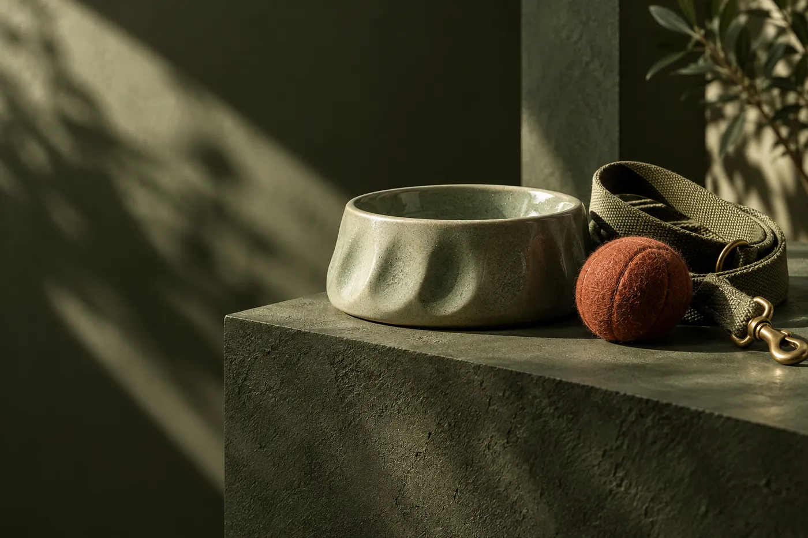

Paws & Plates.
Daily rituals.
A pet store in Queens. Begin with a sample collection for mealtimes, walks and the play in between.
Open the cupboard →32-22 47th St, Long Island City, NY 11103

What’s the routine?
The Paws And Plates name puts mealtime first, with room for walking and play alongside it.
FeedingExplore the sample collection, then ask the store about the current range and availability.
Explore feeding →Demo selection. Confirm products, prices and availability with the store.
From the pet cupboard
Sample accessory entries demonstrate dimensions, stock information and a place for the maker’s care instructions.

Call the store to ask about the current selection and opening information before visiting.
Call +13474550471